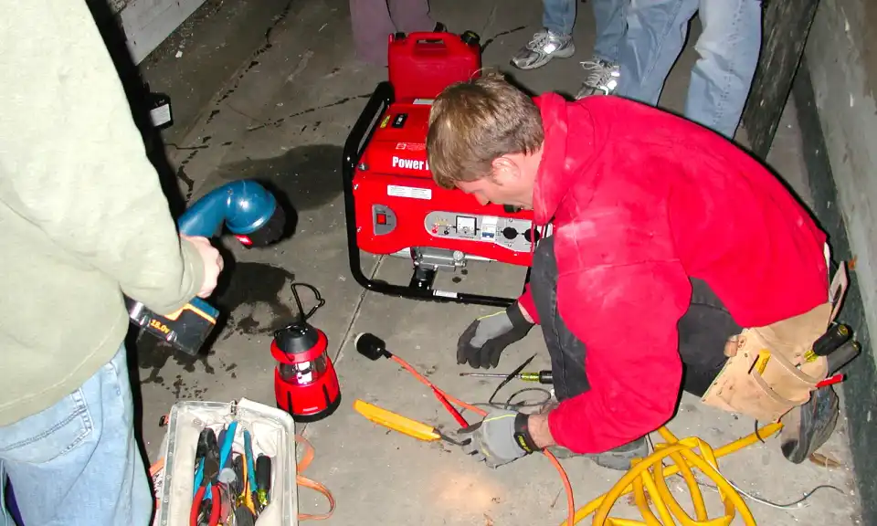
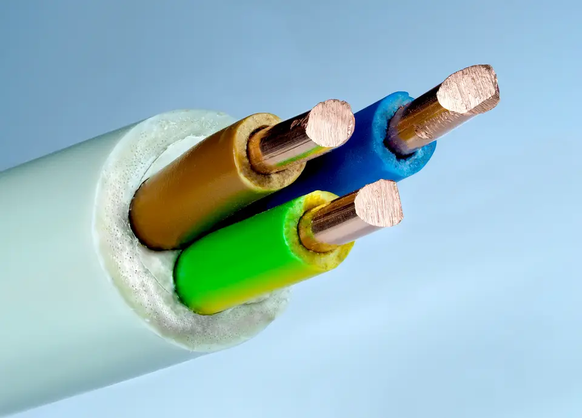
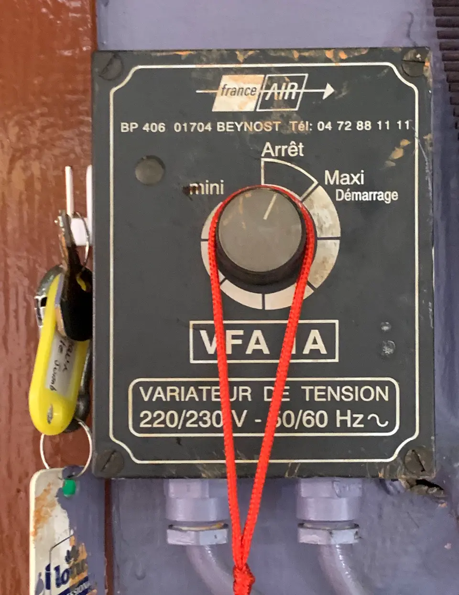
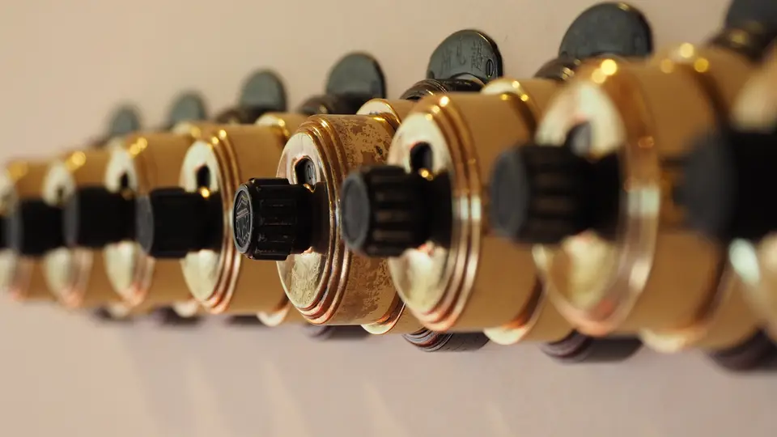

Assuré décennale (Assureur fictif)
Couverture décennale complète n° DEMO-0001 sur l'ensemble de nos réalisations électriques.
Installations fiables, conformité NF C 15-100 et dépannage soigné à Nantes et dans toute l'agglomération pour particuliers et professionnels.

Assureur fictif, contrat n° DEMO-0001 : chaque chantier est couvert dix ans.
Une entreprise déclarée, établie à Nantes, joignable au 04 00 00 00 00.
Un chiffrage écrit après visite, sans surprise ni ligne cachée.
Couverture décennale complète n° DEMO-0001 sur l'ensemble de nos réalisations électriques.
Entreprise locale enregistrée et établie au 1 rue de la Démonstration à Nantes.
Chiffrage transparent détaillé sans surprise préalable avant tout début de chantier.
Rénovation complète des circuits vétustes, intégration des disjoncteurs différentiels 30 mA et mise en sécurité générale.
Pose de tableaux modulaires modernes, étiquetage clair des lignes et préparation rigoureuse au passage du Consuel.
Diagnostic précis au multimètre, identification des courts-circuits et réparation sécurisée sans promesse hâtive.
Création de circuits sous gaine ICTA, pose d'appareillages encastrés ou en saillie et raccordement de luminaires.
Mesure de la boucle de terre, raccordement équipotentiel et protection optimale des personnes contre les fuites de courant.
Alimentation spécifique pour gros électroménager, plaque induction, chauffe-eau et raccordement de bornes adaptées.





Centre-ville, Chantenay, Doulon, Île de Nantes et tous quartiers.
Pont-Rousseau, Trentemoult, Ragon et secteurs sud Loire.
Preux, Crémetterie, Atlantis et ouest métropole nantaise.
Bourg, Petit Chantilly, Bugallière et nord de l'agglomération.
Vous nous décrivez vos besoins électriques ou votre panne via notre formulaire direct.
Examen du tableau, repérage des gaines existantes et évaluation des contraintes sur place.
Envoi d'un devis clair et chiffré poste par poste, respectant les normes de sécurité en vigueur.
Exécution des travaux par un artisan électricien qualifié et nettoyage complet du chantier.
Un disjoncteur qui déclenche indique une surcharge sur la ligne ou un défaut d'isolement vers la terre. En cas de doute ou d'odeur de chaud, coupez le disjoncteur général et contactez-nous pour une vérification technique sur place.
Nous préparons chaque installation neuve ou rénovée selon les prescriptions strictes de la norme NF C 15-100 et nous vous accompagnons dans la constitution du dossier Consuel avant le raccordement définitif.
Pas nécessairement si votre tableau dispose encore d'emplacements disponibles et d'une protection différentielle conforme. Une visite technique permettra de vérifier l'état du peigne et des protections modulaires.
Après notre échange ou notre visite d'évaluation sur place à Nantes ou dans l'agglomération, nous vous transmettons votre devis détaillé sans frais dans les meilleurs délais.